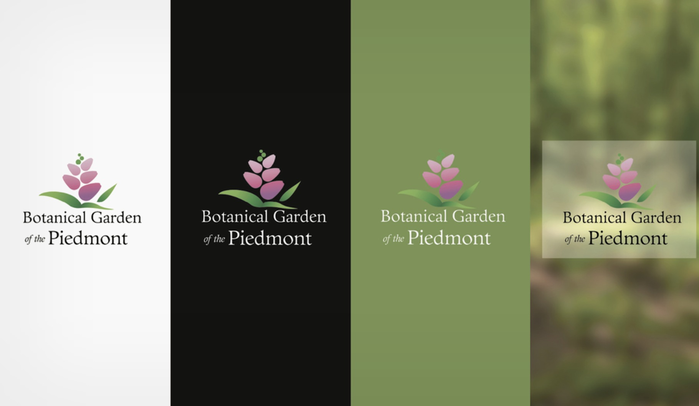
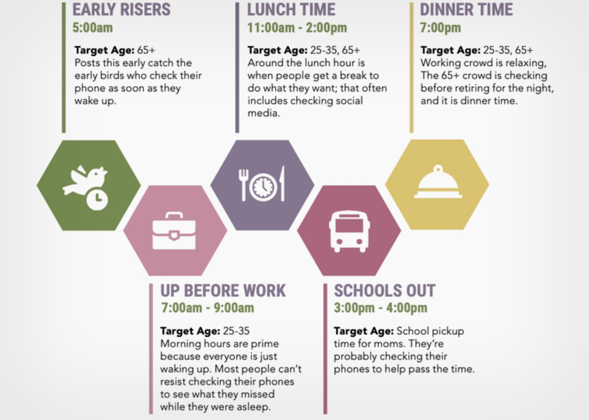
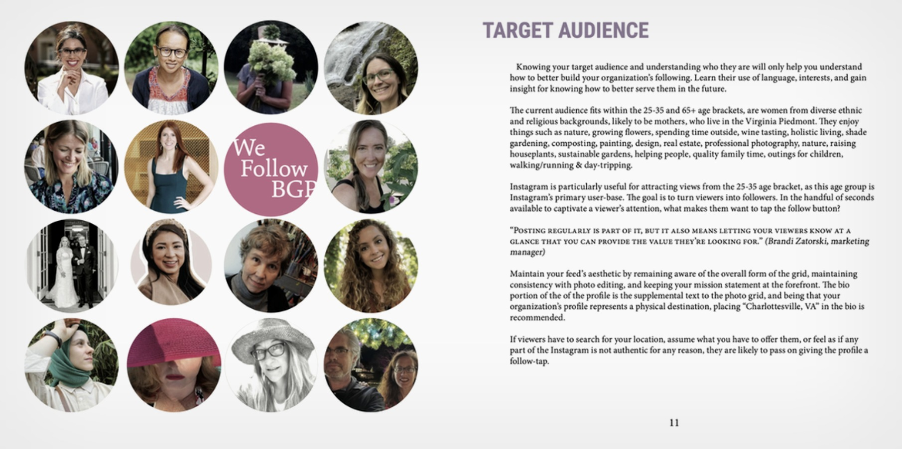
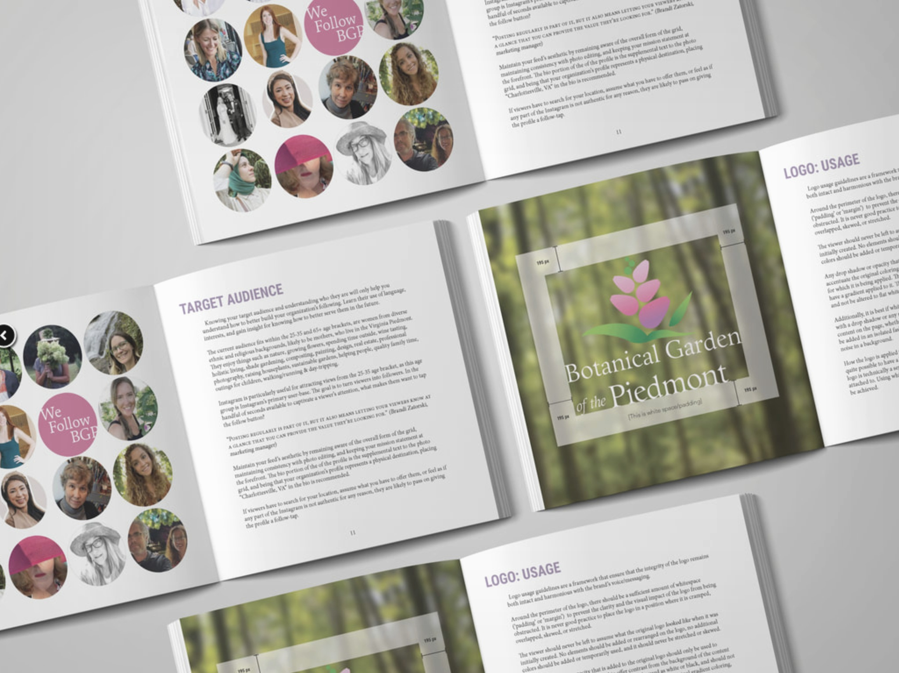
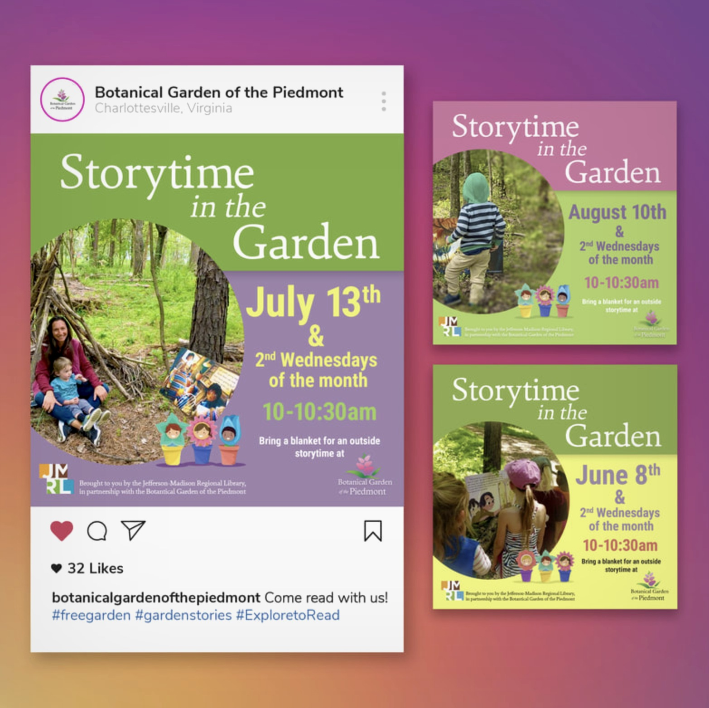
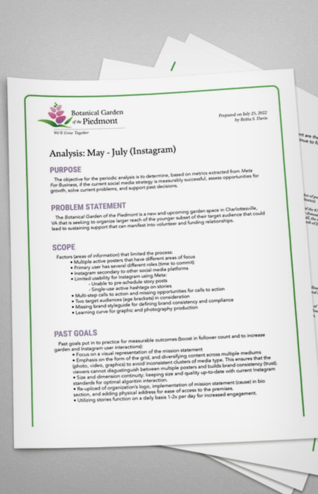

A garden still
finding its roots.
The Botanical Garden of the Piedmont is a new and growing nonprofit garden space in Charlottesville, VA — working to build community, attract volunteers, and secure funding in a competitive local landscape. They needed a clear brand voice, a social media strategy grounded in real audience data, and the print materials to bring it all to life.
The engagement started with analysis: three months of Instagram metrics, audience demographics, and competitive review. From that foundation came a full Brand Style & Social Marketing Guidebook — the organization's north star for every design and communications decision going forward.

A logo system built
to grow anywhere.
The BGP logo — a stylized lotus bloom rising from a grass bed — needed to work across every surface: white backgrounds, photography, branded green, and black. The identity system established clear rules for each context, ensuring the mark retained its warmth and legibility whether it appeared on a social post, a printed flyer, or a donor letter.



Know who you're
growing for.
Effective social strategy starts with knowing your audience. Research identified two primary demographics — women ages 25–35 and 65+ in the Virginia Piedmont — with distinct content preferences, platform behaviors, and motivations for engagement.
The 25–35 bracket represented Instagram's core user base: visually driven, community-oriented, and responsive to authentic storytelling. The 65+ audience skewed toward event announcements and mission-driven content. The strategy was built to serve both — without flattening either.
Right message.
Right moment.
Audience research revealed five optimal posting windows across the day — each mapped to a specific demographic's routine. Early morning caught the 65+ audience before breakfast. Lunch and after-work hours served the 25–35 crowd. The school pickup window was a surprise high-performer for parent engagement.
Understanding when to post meant the organization could do more with fewer posts — and stop publishing into the void at off-peak hours.

Templates that
actually get used.
The content templates were designed to be reusable without feeling repetitive. The Storytime in the Garden series — a recurring monthly program in partnership with the Jefferson-Madison Regional Library — needed a consistent visual identity across multiple dates while still feeling fresh each time.
Each post was built to work as both a standalone square and a vertical story, sized and formatted to meet current Instagram algorithmic standards for maximum reach. Caption frameworks followed the Invite, Inspire, Sustain, Wellness model developed in the guidebook.

Print that feels
like the garden.
The Explore to Read flyer was designed to feel inviting, energetic, and unmistakably BGP — warm yellow and botanical pink, playful bee illustrations, with clear hierarchy guiding parents from the headline to the call to action. The program invited Pre-K through 3rd grade students to search the Garden trails for the pages of an enlarged storybook, earning a nature scavenger hunt and complimentary snack time.
Every print piece was built to carry the brand's tagline — We'll Grow Together — forward into the physical world, extending the digital identity into the spaces where BGP's community actually gathered.
Strategy informed
by real data.
The engagement included periodic analytics reports drawn from Meta for Business, measuring whether the strategy was working — and where it wasn't. Each report covered follower growth, reach, engagement rate, post performance, and story analytics, with written recommendations for the next quarter.
This wasn't a "set it and forget it" strategy. The reports closed the feedback loop between design decisions and real-world audience behavior, allowing the organization to course-correct quickly and reinvest in what was resonating.

Strategy, design, and
everything in between.
This project was built from the ground up — from audience research and metric analysis through logo system documentation, social content production, and print design. One person, full stack, for a nonprofit that needed everything at once.
The strategy is
still working.
When I took on this project, BGP's Instagram account was in net decline — losing followers faster than it was gaining them. The goal wasn't just to stop the bleed. It was to build something sustainable enough that the organization could carry it forward on their own. They have. BGP is still using the Brand Style & Social Marketing Guidebook today, and the follower count reflects it.
Active Use